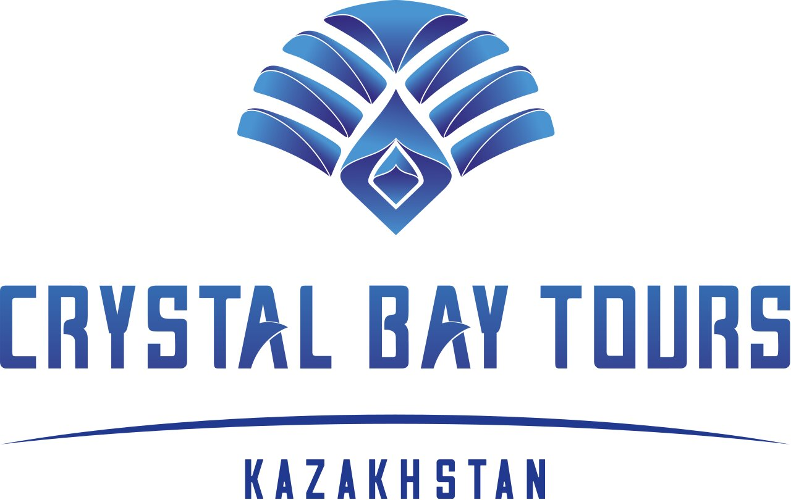

Подобрать тур онлайн по всем туроператорам
На сайте турагентства "Time to Travel" вы найдете самые выгодные предложения для путешествий по всему миру. Мы постоянно обновляем список доступных туров, чтобы предложить вам самые актуальные и выгодные варианты. Независимо от того, ищете ли вы экзотическое путешествие на острова, захватывающие приключения в горах или спокойный пляжных отдых под пальмами, у нас есть идеальный вариант для вас.
Туры от надёжных туроператоров
У нас собраны самые актуальные туры по всем направлениям с вылетами из Караганды, Астаны, Алматы и др. городов Казахстана, чтобы удовлетворить самые разнообразные предпочтения и бюджеты. Путешествуйте с комфортом и экономьте вместе с турагентством «Time to Travel»! Мы сотрудничаем только с самыми лучшими и проверенными туроператорами Казахстана.
| Туроператор | Год основания | Основные направления | Специализация |
|---|---|---|---|
| Туроператор Kompas ул. Сатпаева, 30/8 Алматы Казахстан 050040 | 1997 | Турция, Египет, ОАЭ, Таиланд, Греция, Испания, Италия, Хорватия, Черногория, Мальдивы | Пляжный отдых, экскурсионные туры, горнолыжные курорты |
| Туроператор Fun&Sun пр. Достык, 172 Алматы Казахстан 050051 | 2002 | Турция, Египет, ОАЭ, Таиланд, Вьетнам, Индонезия, Мальдивы, Шри-Ланка, Кипр, Греция | Семейный отдых, молодежные туры, премиум-отдых |
| Туроператор Selfie Travel пр. Назарбаева, 242 Алматы Казахстан 050000 | 2015 | Вьетнам, Грузия, Египет, Занзибар, Индия, Индонезия, Турция, Камбоджа, Мальдивы, Франция, Чехия | Авторские туры, фототуры, гастрономические туры |
| Туроператор TezTour пр. Аль-Фараби, 7 Алматы Казахстан 050059 | 1994 | Турция, Египет, Испания, Греция, Таиланд, Доминикана, Куба, Мексика, ОАЭ, Мальдивы | Пляжный отдых, экскурсионные туры, MICE-туризм |
| Туроператор Anex пр. Абылай хана, 135 Алматы Казахстан 050000 | 1996 | Турция, Египет, Таиланд, Вьетнам, ОАЭ, Испания, Греция, Кипр, Тунис, Доминикана | Пляжный отдых, семейный туризм, горнолыжные курорты |
| Туроператор JoinUp ул. Желтоксан, 181 Алматы Казахстан 050013 | 2012 | Таиланд, Вьетнам, Индонезия, Малайзия, Сингапур, Филиппины, Гонконг, Япония, Южная Корея, Тайвань | Экзотические туры, азиатские направления, острова |
| Туроператор Pegas Touristik ул. Байтурсынова, 85 Алматы Казахстан 050000 | 1994 | Турция, Египет, Таиланд, Тунис, ОАЭ, Испания, Греция, Кипр, Индия, Вьетнам | Пляжный отдых, семейные туры, молодежный отдых |
| Туроператор Kazunion пр. Абая, 76/109 Астана Казахстан 010000 | 2002 | Казахстан, Кыргызстан, Узбекистан, Таджикистан, Туркменистан, Россия, Грузия, Армения, Азербайджан, Монголия | Внутренний туризм, экотуризм, культурно-познавательные туры |
|  Туроператор Crystal Bay Tours ул. Достык, 132 Алматы Казахстан 050051 | 2008 | Вьетнам | Островной отдых, дайвинг-туры, свадебные путешествия |
| ABK Tourism ул. Кунаева, 21Б Алматы Казахстан 050016 | 2016 | Турция | Пляжный отдых, свадебные туры |
Как найти тур от всех туроператоров
Поиск идеального тура может быть утомительным и долгим процессом. Просмотр предложений на сайтах разных туроператоров отнимает много времени и сил, а вы рискуете упустить выгодные предложения. С помощью нашей системы поиска туров от всех туроператоров вы сможете легко найти путевку, сравнить цены и выбрать оптимальный вариант, экономя время и деньги. Наша система использует ведущий модуль поиска и бронирования туров, который собирает туры или путевки от всех крупных туроператоров Казахстана. Это позволяет вам:
-
Сравнивать цены на туры от разных операторов в режиме реального времени
-
Получать актуальную информацию о наличии мест и горящих предложениях
-
Использовать удобные фильтры для подбора тура по вашим параметрам
-
Видеть полную информацию об отелях, включая отзывы и фотографии
На нашем сайте вы можете найти горящие туры, туры на Наурыз и весенние каникулы, пляжные туры, свадебные туры, тематические туры, туры на День Рождение, лечебные туры, туры на майские праздники, туры на Рождество и Новый Год, туры по Европе, туры на отдых с детьми, экскурсионные и автобусные туры, шоппинг-туры. Для тех кто любит планировать путешествие заранее можно найти туры для раннего бронирования.
Магия поиска семейных туров
Планирование семейного отпуска требует особого подхода, и наша система поиска туров от всех туроператоров учитывает специфические потребности путешествующих с детьми. При выборе тура для семьи важно обращать внимание на такие факторы, как наличие детских клубов, анимации на русском языке, детского меню в ресторанах отеля, а также безопасность пляжа и наличие детских бассейнов. Наша система позволяет легко фильтровать предложения по этим параметрам, экономя ваше время на поиск подходящих вариантов.
Популярными направлениями для семейного отдыха среди клиентов нашего турагентства являются Турция, Таиланд, Вьетнам, Египет и ОАЭ. Эти страны предлагают широкий выбор отелей, ориентированных на семейный отдых, с развитой инфраструктурой и разнообразными развлечениями для детей разных возрастов. При поиске тура обратите внимание на отели с просторными семейными номерами или смежными комнатами, что обеспечит комфортное размещение для всей семьи.
Важным аспектом при выборе семейного тура является транспортная доступность. Наша система поиска туров позволяет выбрать оптимальные варианты перелета с учетом возраста детей, предпочитая прямые рейсы или перелеты с минимальным временем пересадки. Кроме того, вы можете ознакомиться с информацией о длительности трансфера от аэропорта до отеля, что особенно важно при путешествии с маленькими детьми.
Не забывайте, что при поиске тура для семьи важно учитывать сезонность выбранного направления. На нашем сайте можно найти информацию о климате, температуре воды и погодных условиях в разные периоды года, что поможет вам выбрать оптимальное время для отпуска. Используя нашу платформу для поиска туров от всех туроператоров, вы сможете легко сравнить различные варианты, учитывая все аспекты семейного отдыха, и выбрать идеальное путешествие, которое подарит незабываемые впечатления всем членам семьи.
Как купить тур: процесс бронирования онлайн
При выборе тура важно учитывать несколько ключевых факторов, которые помогут сделать ваш отдых максимально комфортным и приятным. Прежде всего, определитесь с направлением и типом отдыха, который вы предпочитаете: пляжный, экскурсионный, горнолыжный или комбинированный. Используя нашу систему поиска туров от всех туроператоров, вы можете легко сравнить различные варианты и выбрать наиболее подходящий. Обратите внимание на рейтинг и отзывы об отеле, его расположение относительно пляжа или основных достопримечательностей можно посмотреть по карте.
Процесс бронирования тура через нашу систему максимально прост и удобен. После того как вы определились с направлением и датами поездки, воспользуйтесь фильтрами для уточнения параметров поиска. Вы можете выбрать тип отеля, задать диапазон цен, указать предпочтительный рейтинг отеля и другие важные для вас критерии. Система автоматически подберет все доступные варианты, соответствующие вашим требованиям, и предоставит актуальные цены от различных туроператоров.
При выборе конкретного тура внимательно изучите информацию об отеле, включая фотографии номеров и территории, описание инфраструктуры и сервиса. Не забудьте проверить наличие дополнительных сборов или налогов, которые могут взиматься на месте. Если у вас возникнут вопросы или потребуется дополнительная информация, наши эксперты всегда готовы помочь вам сделать правильный выбор. Вы можете связаться с нами через WhatsApp или по телефону для получения консультации.
После того как вы определились с выбором тура, процесс бронирования займет всего несколько минут. Вам нужно будет заполнить форму и отправить запрос. Сразу после получения заявки наши специалисты проверят все детали вашего бронирования и свяжутся с вами в случае необходимости уточнения информации или предоставления дополнительных документов и оплаты тура. Таким образом, используя нашу систему поиска и бронирования туров от всех туроператоров, вы можете быстро и удобно спланировать свой идеальный отпуск, имея доступ к широкому выбору предложений и профессиональной поддержке на всех этапах.
FAQ: ответы на часто задаваемые вопросы о поиске и покупке тура
Популярные направления для отдыха
Наша система поиска и бронирования туров предлагает широкий выбор путешествий в самые востребованные уголки мира. Откройте для себя незабываемые приключения в этих удивительных странах:
Туры в Турцию
Откройте для себя магию Турции – страны, где Восток встречается с Западом! Насладитесь лазурными водами Средиземного моря, погрузитесь в историю древних цивилизаций и побалуйте себя изысканной кухней. Турецкое гостеприимство, роскошные all-inclusive отели и захватывающие дух пейзажи Каппадокии ждут вас. Будь то романтический отдых в Анталии, культурное погружение в Стамбуле или релакс на пляжах Бодрума – Турция подарит вам незабываемые впечатления и оставит желание вернуться снова!
Туры в ОАЭ
Погрузитесь в мир роскоши и инноваций в Объединенных Арабских Эмиратах! Здесь футуристические небоскребы соседствуют с древними традициями, а пустынные пейзажи сменяются ультрасовременными торговыми центрами. Насладитесь безупречным сервисом в лучших отелях мира, испытайте адреналин в тематических парках Дубая или отправьтесь на сафари по золотым песчаным дюнам. ОАЭ – это воплощение восточной сказки XXI века, где каждый найдет свое собственное чудо!
Туры в Египет
Откройте для себя таинственный мир древних фараонов и современного пляжного отдыха в Египте! Погрузитесь в кристально чистые воды Красного моря, исследуйте красочные коралловые рифы и насладитесь первоклассным дайвингом. Величественные пирамиды Гизы, загадочный Сфинкс и храмы Луксора перенесут вас на тысячи лет назад. А современные курорты Хургады и Шарм-эль-Шейха предложат все удобства для незабываемого отдыха. Египет – это идеальное сочетание истории, культуры и пляжного релакса!
Туры в Таиланд
Окунитесь в экзотику Таиланда – страны улыбок, буддийских храмов и райских пляжей! Насладитесь теплым Андаманским морем на Пхукете, исследуйте джунгли северного Чиангмая или погрузитесь в яркую ночную жизнь Бангкока. Тайская кухня побалует ваши вкусовые рецепторы, а традиционный массаж расслабит тело и душу. Открытые и дружелюбные тайцы, богатая культура и неповторимая атмосфера сделают ваш отдых по-настоящему незабываемым. Таиланд – это рай, где каждый найдет свой уголок блаженства!
Туры во Вьетнам
Откройте для себя удивительный Вьетнам – страну контрастов, где древние традиции гармонично сочетаются с стремительным развитием! Насладитесь великолепными пляжами Нячанга, исследуйте живописную бухту Халонг или погрузитесь в атмосферу колониального прошлого в Хойане. Вьетнамская кухня покорит ваше сердце, а местные жители удивят своим гостеприимством. От шумных улочек Ханоя до умиротворяющих рисовых террас Сапы – каждый уголок этой страны таит в себе удивительные открытия. Вьетнам – это путешествие, которое навсегда изменит ваше представление о Юго-Восточной Азии!
Туры в Грузию
Погрузитесь в гостеприимную атмосферу Грузии – страны, где каждый гость становится другом! Насладитесь великолепной природой Кавказских гор, искупайтесь в лазурных водах Черного моря и попробуйте легендарное грузинское вино. Тбилиси очарует вас своей уникальной архитектурой, а древние храмы Мцхеты перенесут в глубину веков. Грузинское застолье с тостами, песнями и невероятно вкусной едой станет незабываемым опытом. Откройте для себя страну, где традиции бережно хранятся, а гостеприимство – не просто слово, а образ жизни!
Туры на Хайнань
Откройте для себя тропический рай на острове Хайнань – "Восточных Гавайях" Китая! Насладитесь белоснежными пляжами и лазурными водами Южно-Китайского моря в Санье, погрузитесь в атмосферу безмятежности в буддийских храмах или испытайте на себе чудодейственную силу местных горячих источников. Хайнань – это идеальное сочетание пляжного отдыха, богатой культуры и современной инфраструктуры. Будь то романтический отпуск или семейное путешествие, этот тропический остров подарит вам незабываемые впечатления и желание вернуться снова!